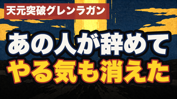

EP60 通し視聴ゲート（人間承認③/3・最終）— 2026-08-17
あの人が辞めた日から、自分のやる気まで、いなくなった。｜天元突破グレンラガン×予
結論: 完成しました。7分30秒・25シーン。機械ゲートは全通過（識別監査・発音・黒落ち・音量・字幕同期）。
要判断: あり — ①通しで観て公開してよいか ②公開日は9/28(月)04:00でよいか
詳細: 動画を通しで観てください。下のチャプターは早送り確認用です。
完成品
動画: releases/081/ep60_yo.mp4（QuickTimeで開いてください）
サムネイル（360px＝フィード実寸）:

チャプター（早送り確認用）
| 時刻 | 内容 |
|---|
| 0:00 | あの人が辞めた日から、自分のやる気まで、いなくなった |
| 0:19 | やる気は、出していたんじゃなくて、もらっていた |
| 0:39 | 地下の村で、一人で壁を掘り続ける少年 |
| 0:53 | 上があると信じて、背中を押した人 |
| 1:10 | 見てくれる人がいるだけで、同じ作業の重さが変わる |
| 1:23 | 第8話。その人が死ぬ |
| 1:36 | 掘る腕はあるのに、掘る理由が消えた |
| 1:50 | 私たちの場合は、誰も死なない。席が一つ空くだけ |
| 2:06 | 3000年前の本に、この形の名前があります |
| 2:23 | 予＝地の中から雷が鳴り出てくる形 |
| 2:40 | 六本の線。切れていないのは、ただ一本 |
| 2:54 | 四番目＝楽しみの源。髪留めが髪を集めるように |
| 3:14 | 残り五本は、その一本に寄りかかっている |
| 3:34 | 見上げる楽しみは、悔いを生む |
| 3:56 | ずっと具合が悪いのに、死なない |
| 4:18 | 鳴る楽しみは、凶 |
| 4:40 | 見てくれる人がいないと、自分で手を抜いた |
| 4:58 | 段は六つ。今日踏むのは一段だけ |
| 5:08 | 第11話。アニキは死んだ、もういない |
| 5:26 | 見上げる場所から、担ぐ場所へ |
| 5:47 | 今日やること＝誰から何をもらっていたか、一行書く |
| 6:09 | いつか、源の側に回る番が来る |
| 6:31 | 溺れきったあとでも、変われば、咎なし |
| 6:54 | 座を降りて、また掘りに行く |
| 7:11 | 雷は、次は別の場所から鳴る |
機械ゲートの通過状況
✅ 識別監査 全24カットで作品・キャラともに「不明」。安全弁4項目（顔・原作意匠・文字・写実）すべてクリア。グレンラガンの固有意匠（ドリル/マント/サングラス/顔つきロボ）は一つも描いていません
✅ 発音 25シーン中 FAIL 0・WARN 4。WARNはいずれもASRの漢字当て違いで、読み自体は正しいと判断（「神奈が」＝カミナが／「駅郷」＝えききょう＝易経／「弱」＝予は→よわ／「この家では」＝この卦では）。耳での最終確認だけお願いします
✅ 黒落ち 24のシーン境界すべてで黒落ちなし（ep1-38で全話にあったバグ）
✅ 音量 ピーク -4.7dB（クリップなし）／幕間BGM -34.0dB（基準-44〜-32dB内）。初回レンダで-31.4dBの超過が出たためBGMを2.5dB下げて再レンダ済み
✅ 字幕同期 25シーンで単調性・全文一致・語境界すべてOK
✅ 事実検証 作品事実8件＋易経db逐語10件を一次情報照合。ニアの消滅など終盤の結末には触れていません
✅ 読者ゲート 80点（合格70・まっさらな読者役1体）。「ジムの会費のやつ、自分すぎて指が止まった」「一本だけ切れてない線=カミナは鳥肌」
この回の芯
予（16）は、六本のうち陽が九四の一本しかない卦。残り五本はすべてその一本に寄りかかっています＝「チームのやる気が一人の熱源に依存している」形が、卦の図そのもの。カミナ＝九四（楽しみの源・疑うな・髪留めが髪を集めるように友が集まる）。第8話でその一本が抜けてシモンが止まり、第11話「アニキは死んだ、もういない。俺は、俺だ」で見上げる場所（六三）から担ぐ場所（九四）へ熱の置き場所を移す。処方は「今日：誰から何をもらっていたか一行書く」の一手だけ。
公開キット（承認後すぐ出せる状態）
- タイトル: あの人が辞めた日から、自分のやる気まで、いなくなった。｜天元突破グレンラガン×予
- サムネ: output/thumbnail-review/tierA/081.png（作品名タグ＋「あの人が辞めて／やる気も消えた」）
- 概要欄: content/081/description.txt（チャプター25・卦の解説・出典・AI開示・免責）
- 公開枠: 2026-09-28（月）04:00 JST 予約済み
- 実験: H58痛み先頭コホート／H71（時点名指し）2本目・準実験扱い